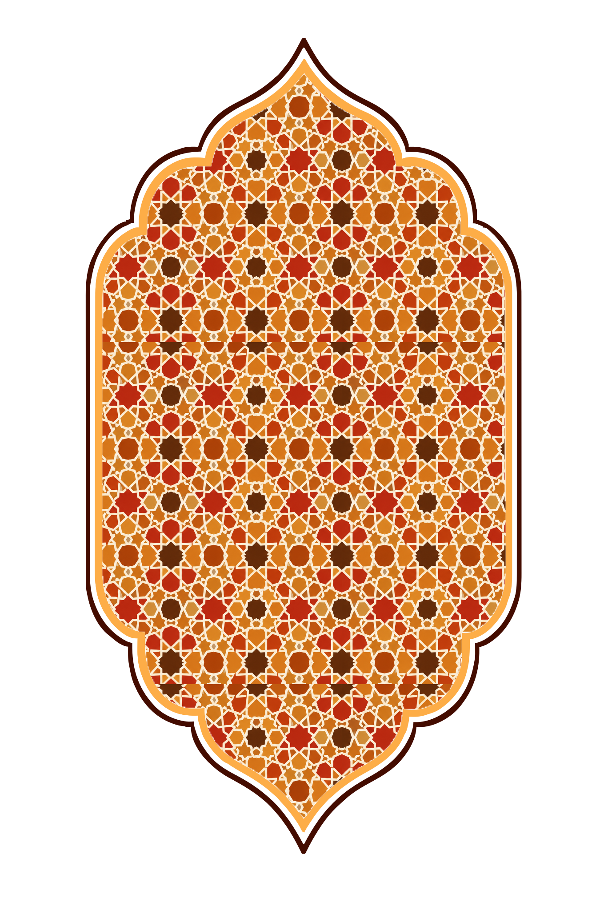

Kant-en-klare compositie: het zellige-patroon uitgesneden op de binnencontour van het sierkader. PNG op 1368×2048 (
assets/elements/tajine2go-frame-pattern.png
); de losse mask staat in
frame-inner-mask.png
.